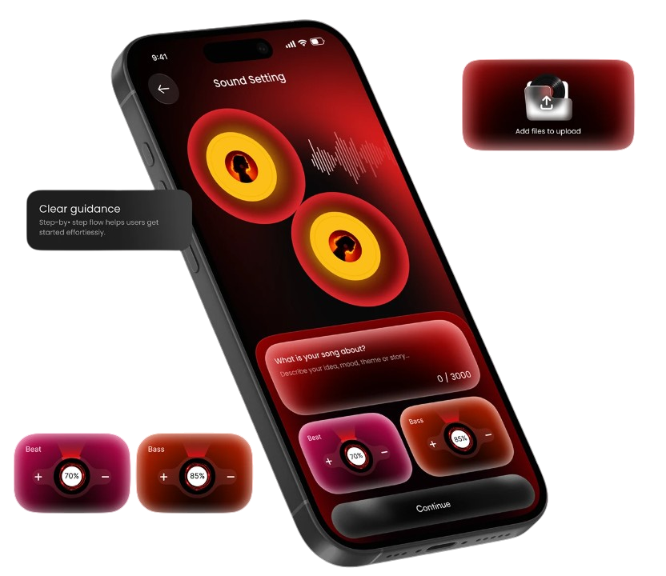

Somos un grupo que
escribe lo que escucha.

Qué hacemos
Somos un equipo de desarrollo en formación. Resonar nació como proyecto de clase para practicar HTML, CSS y trabajo en equipo con metodología SCRUM, usando la música como tema.
Por qué existe este sitio
Queremos que el blog se vea bien, cuente cosas interesantes y sirva de base para que un cliente lo siga haciendo crecer.